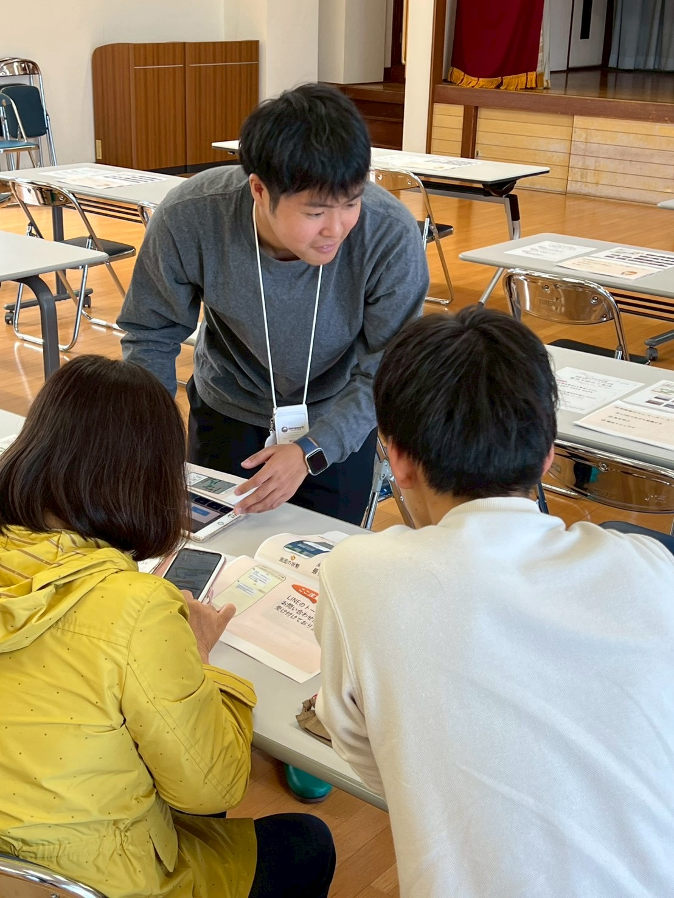
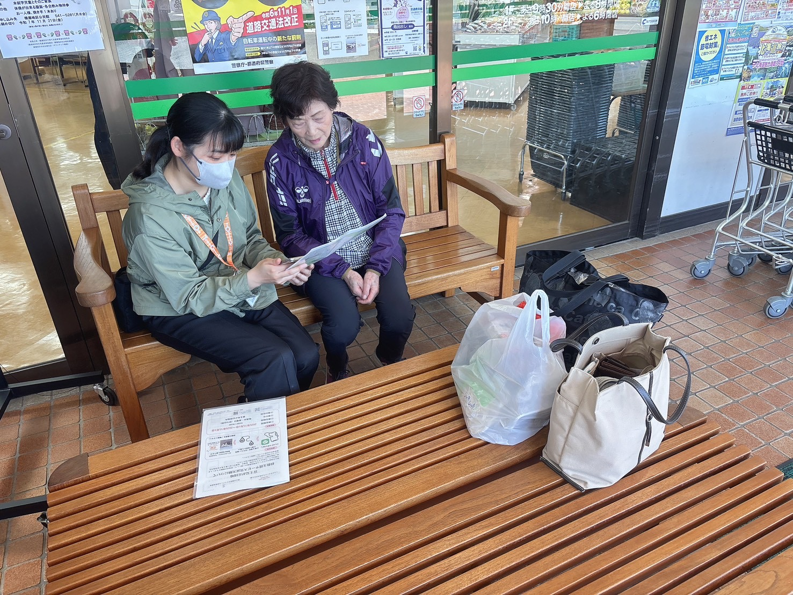
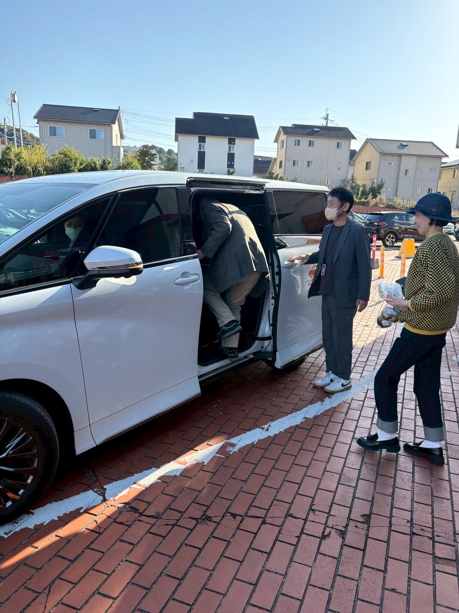

01 / PEOPLE
人




35ACTIONS
活動一覧に記載された35項目。
複数日をまとめた活動を含みます。
750+PARTICIPATIONS
延べ参加人数。同一人の重複参加・実証参加を含む、事業側集計です。
大分未来モビリティ・コンソーシアム
若者が大分で挑戦したくなる
仕事と産業をつくる。
人材、企業、観光、食、文化、自然、技術。大分がすでに持っている力をつなぎ、新しい事業へ変えていく。
考えたいのは、大分で成長できる仕事と所得を、どう増やすか。モビリティをそのための手段にして、地元に価値が残る仕組みをつくります。
OUR MISSION / 育てる。つなぐ。事業にする。


育つ人。つながる移動。出会う場所。
この3つを掛け合わせて、大分の次をつくる。

活動一覧に記載された35項目。
複数日をまとめた活動を含みます。
延べ参加人数。同一人の重複参加・実証参加を含む、事業側集計です。
LAND / SEA / AIR


2026年9月、大分初導入のe-Paletteを成長投資へ。既存の自動車や小型モビリティ、鉄道、船、空港と組み合わせ、地域の魅力と人をつなぐ使い方を育てます。
e-Paletteは導入済み。具体的な用途・実施体制は準備・検討段階です。海・空との一体的な連携や空飛ぶクルマの活用は将来構想であり、運行決定を示すものではありません。



それぞれの地域の魅力を、陸・海・空で結ぶ。場所を点で考えることから、大分全体を一つの仕組みとして考えることへ。
将来構想を説明する模式図です。地理的位置、運行経路、接続や役割の確定を示すものではなく、各施設・事業者の参画も未確定です。
Garraway0
課題を持ち寄る。実施主体を決める。
現場で試し、成果を確かめる。
続けられる仕組みにして、
大分の仕事と事業へ育てる。
今年度は4案件を対象に、関係者との協議、実施条件、実施体制を検討する計画です。実装の確定件数ではなく、これから具体化する候補です。

学びから移動へ。現場から事業へ。
これまでの実践を起点に、地元の仲間と育てていくテーマです。

OUR CONTENTS
実践の蓄積を、次の挑戦に使う。
モビリティを走らせることが成果ではない。
大分に何が残ったかを成果にする。
地元で生まれる売上、仕事、所得。挑戦する人、使い続けられる知識とデータ、地域を越えてつながる仲間。その蓄積を、次の成長投資へ。


持ち寄るのは、課題でも、アイデアでも、得意なことでも。
まずは「一緒に何ができるか」から話しませんか。
技術・サービス・人材・
事業アイデア
大分の課題・政策テーマ・
実証フィールド
研究・教育・
若者の挑戦
現場・サービス・商品・
運営力
大分で一緒に
事業をつくる力
発起人会、参画候補への説明・意向確認、地域企業との対話、実装候補の案件形成を進め、正式発足へつなげる計画です。
関心のあるテーマ、持ち寄れる力、相談したいことをお聞かせください。
メールアプリが開きます。
相談窓口：モビリティデザインラボ
info@mobilitydlab.com
コンソーシアムの立ち上げを呼びかけ、人材育成と連携体制づくりを進める中心主体です。地元の企業、行政、大学、人をつなぎ、現場で動くプロジェクトを育てます。
車両と整備網、地域で築いた関係、実践から得られる知見。それらをつなぐ力を、大分の未来をつくる力へ。
トヨタカローラ大分について ↗地域・企業・モビリティをつなぎ、実装を動かす。
組織とプロジェクトを設計し、日々の活動を動かす。運営に必要な契約・口座・会計はモビリティデザインラボが担う方針です。
政策、地域課題、地域企業の強みをつなぐ関係を設計中。各主体の正式参画・役割は今後の協議で決めます。
掲載の体制は設立に向けた協議案です。個別プロジェクトの実施主体・契約・会計・責任は案件ごとに定めます。
人を育てる。
地元の仲間と共創。
次の事業をつくる。
新法人をつくらず、既存の企業・団体の力を生かします。
トヨタカローラ大分とモビリティデザインラボが担います。
運営分はモビリティデザインラボが通常事業と区分して管理し、収支を報告します。
案件ごとに役割、契約、会計、費用負担と責任を定めます。